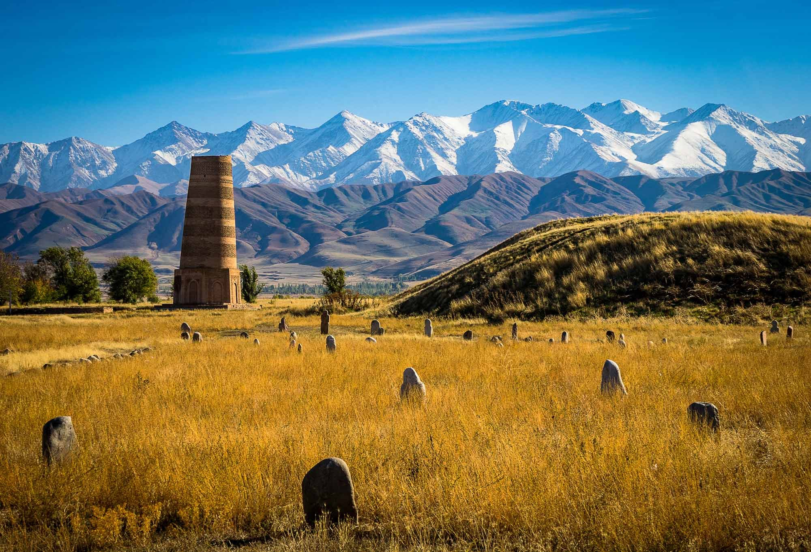
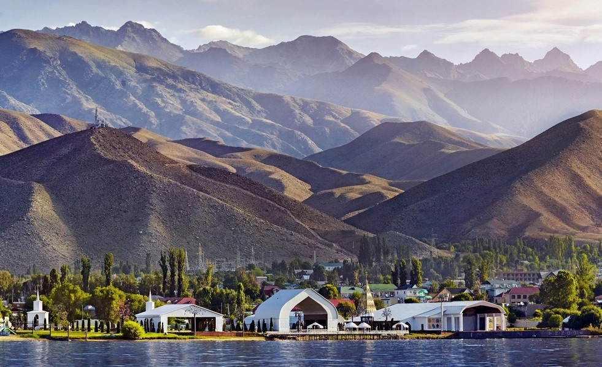

Kyrgyzstan, country of Central Asia. It is bounded by Kazakhstan on the northwest and north, by China on the east and south, and by Tajikistan and Uzbekistan on the south and west. Most of Kyrgyzstan’s borders run along mountain crests. The capital is Bishkek (known from 1862 to 1926 as Pishpek and from 1926 to 1991 as Frunze). The Kyrgyz, a Muslim Turkic people, constitute nearly three-fourths of the population. ... Climate. Kyrgyzstan’s great distance from the oceans and the sharp change of elevation from adjacent plains strongly influence the country’s climate. Deserts and plains surround Kyrgyzstan on the north, west, and southeast, making the contrast with the climate and landscape of its mountainous interior all the more striking.
 